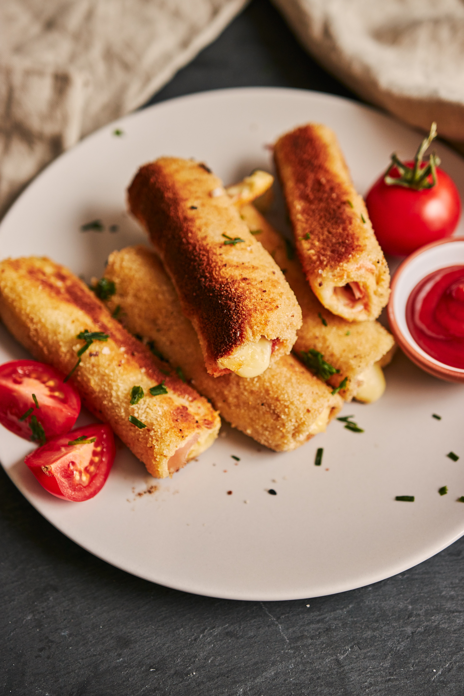
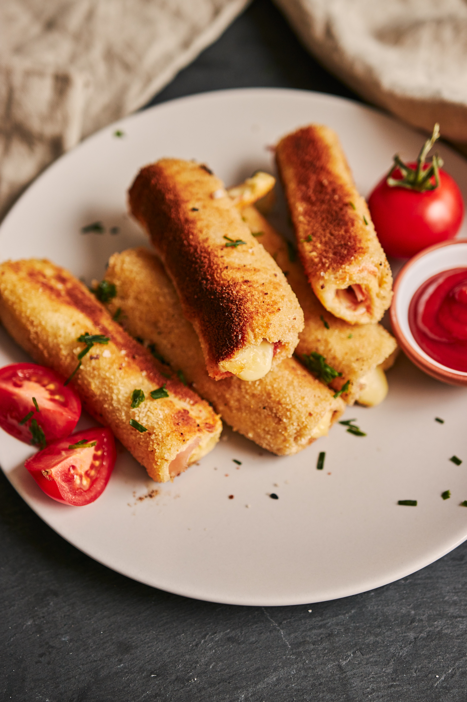

Hello from Equator Design! We are an international team of designers, illustrators, chefs, food stylists and photographers based in 5 main studios around the globe: Manchester, Nottingham, Chicago, Cincinnati, and Toronto.
We are as passionate about food as we are about designing the packaging it comes in! This is our guest blog where we share our inspirations and behind the scenes of our food photography.
Over the summer our teams have been inspired by some stunning locations and produce. This week we’ve had the pleasure of wine tasting in our studio, re-creating moments of sun-drenched Spain inside the red bricked walls of our studio.
Solo rosé
Is a dry wine packed with red berry flavours, perfect for pairing with soft cheeses, spring greens and summer fruits. This silky Spanish rosé is pale and rather provincial in style, and also pairs well with soft peaches as it’s colour suggests.
Food Pairing
We set the table for a long, lazy lunch in the sun. Salty and sweet food pairings relaxingly spread across rustic boards, with berries and fruits echoing the pale peach rosé, while local cured hams and manchego cheese counter-balance with salty flavours.
Accompanied with simple rustic bread, the best olives and a drizzle of honey. This is definitely a wine to be enjoyed alfresco, or with a summer picnic.
Wine Region
Co-op’s Irresistible Solo Rosé comes from Campo de Borja, a Spanish (DOP) for wines northwest of the province of Zaragoza (Aragon Spain). The Moncayo Mountain is a dominating feature of the landscape, creating a micro-climate where vigorous and robust vineyards flourish, giving the wine a unique personality.
Carefully hand harvested from the bush vine Grenacha from the long- standing producer Bodegas Aragonesas, in collaboration with esteemed wine maker Javier Vela.
Behind The scenes-styling the shoot
We carefully recreated that unmistakably Spanish sunlight, filtered through greenery and enjoyed from the shade. We were especially inspired by the beautiful Moorish town of Albarracinin in the region of Aragon, picking up on the soft peach plaster textures and authentic Azulejo tiles for a classic Spanish courtyard feel.


 
